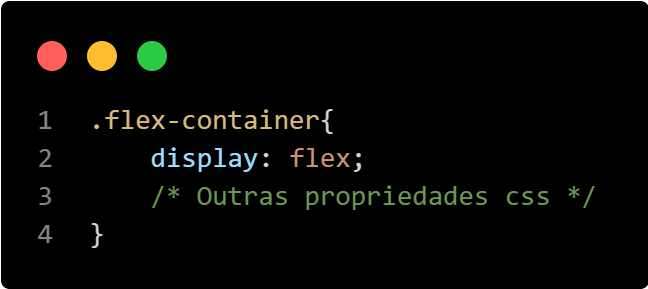

Flexbox é um sistema de layout que ajuda a distribuir os itens
dentro de um contêiner de forma eficiente, alinhando, distribuindo e
controlando o espaço entre eles.
Principais propriedades:
flex-direction: Define a direção dos itens dentro
do contêiner (linha ou coluna).
justify-content: Alinha os itens ao longo do eixo
principal. (Horizontal)
align-items: Alinha os itens ao longo do eixo
transversal. (Vertical)
Como aplicar no seu projeto?
Para utilizar o flexbox em seus projetos você deve definir a
propriedade display: flex; no contêiner pai (Flex
Container). A partir daí, você pode usar as propriedades do flexbox
para alinhar e distribuir os itens filhos.

Terminologia Essencial
Entenda os principais termos usados no CSS Flexbox e Grid:
Flex Container: O elemento pai que utiliza o
display flex para organizar seus filhos.
Flex Item: Os elementos filhos diretos de um
Flex Container.
Eixo Principal (Main Axis): O eixo ao longo do qual
os itens são alinhados. É definido pela propriedade
flex-direction.
Eixo Transversal (Cross Axis): O eixo perpendicular
ao eixo principal. É usado para alinhar itens com
align-items.
Gap: Espaçamento entre os itens em um contêiner
flex ou grid, definido pelas propriedades gap,
row-gap e column-gap.
Justify Content: Propriedade usada para alinhar os
itens ao longo do eixo principal.
Align Items: Propriedade usada para alinhar os
itens ao longo do eixo transversal.